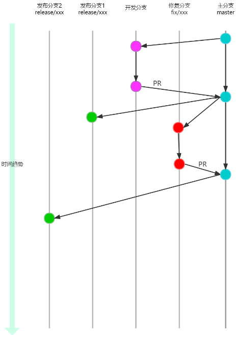
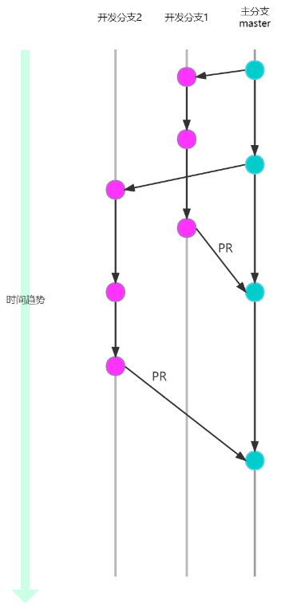
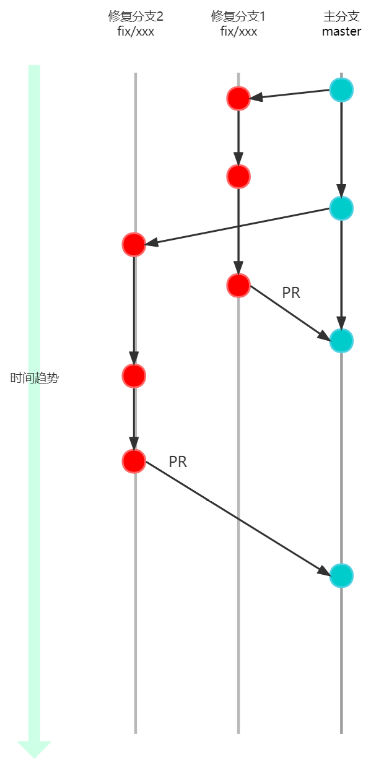
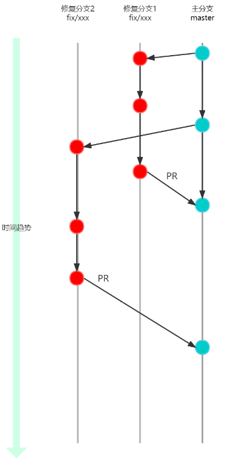

GIT分支工作流规范
版次：2023年1月31日 第1.4版
类型：程序文件
作者：软件部
上海维宏电子科技股份有限公司 版权所有
1 目的
编写本规范的目的是为了完善公司GIT仓库分支工作流程，统一开发协同约定、从而提高软件开发效率与规范。
2 范围
本规范适用于公司所有产品的GIT仓库代码。
- 对于采用 MSF 作为开发流程的项目来说，本制度为强制性的。
- 对于其它新项目GIT仓库，本制度为强制性的。
- 对于其它旧项目GIT仓库，应尽可能参照本制度执行。
3 用词说明
为了便于在执行本标准条文时区别对待，对要求严格程度不同的用词说明如下：
1） 表示很严格，非这样做不可的用词：
正面词采用“必须”，反面词采用“严禁”；
2） 表示严格，在正常情况下均应这样做的用词：
正面词采用“应”，反面词采用“不应”或“不得”；
3） 表示允许稍有选择，在条件许可时首先应这样做的用词：
正面词采用“宜”，反面词采用“不宜”；
4） 表示有选择，在一定条件下可以这样做的用词，采用“可”。
条文中指明应按其他有关标准、规范执行的写法为：“应符合……规定”或“应按……执行”。
4 术语和定义
为了确保对术语的一致性理解，此处定义本文档用到的术语：
- MSF： Microsoft Solution Framework 的缩写，是微软产品研发的方法论，2022 年起公司借鉴其方法论开展研发管理工作。
- GIT仓库：GIT是分布式版本控制系统。研发过程中的文档、代码、测试用例等文件存放在GIT版本控制的仓库中。
- 开发分支：包含feature、doc、style、refactor、test、build，chore。
- PR：拉取请求功能，代码经过评审后合并到目标分支。
- 软件发布：软件发布前为创建release分支提供给测试人员测试，软件未发布提供给客户，软件发布后为软件经过测试人员测试，软件已经发布提供给客户
5 GIT工作流程图

该工作流定义了一个围绕着项目发布的严格分支模型。提供了用于一个健壮的管理项目的框架。该工作流为不同的分支分配一个很明确的角色，并定义分支之间如何和什么时候进行交互。
6 工作方式
工作流仍然以主分支作为交互中心。衍生出开发分支进行开发、发行分支进行测试发行、修复分支进行 bug 修复，一切都围绕着控制一个稳定的主分支并持续改进为本。
6.1 开发分支
开发新功能与修复Bug时，开发人员从 master 分支上创建分支。
分支目录名称约定：
- feature: 新功能开发
- fix: 修补 bug
- doc: 文档（对文档进行了修改）
- refactor: 重构（即不是新增功能，也不是修改 bug 的代码变动）
- test: 增加测试
- build: 对构建系统或者外部依赖项，CI生成脚本配置进行了修改
- chore: 不符合上述任何类型的相关更改
分支名约定：
- 分支的命名必须为
[分支目录]/*-workitem） *代表工作项编号（可选）workitem代表工作简短描述（英文）
在对应的分支上做所有的开发工作，一旦分支开发完成， 必须及时PR到主分支并删除开发分支（如无需保留）。
如： `开发分支

fix 分支

6.2 发布分支

一旦 master 分支上做一次发布，就从 master分支上拉出一个 release 分支。新建的分支用于开始发布循环，发布分支仅用于发布，不会提交任何代码修改（版本号，历史记录等，视为分支的配置而不是代码内容，可以在发布分支上提交），严禁出现 master 与 release 分支之间的合并。
使用一个用于发布准备的专门分支，使得一个团队可以在完善当前的发布版本的同时，另一个团队可以继续开发下个版本的功能。
分支约定：
- 必须从
master分支 拉出release分支。 - 分支的命名必须为
release/*，*代表版本号，如为了区分不同产品的版本发布，命名可为release/产品名称-* - 所有正式发布的版本，必须有相应的
release分支对应。
6.3 软件发布前 fix 版本
测试对 release 分支进行验证，当测试版本出现bug，或者必须有添加的功能时。应重新从 master 分支上拉取开发分支进行开发，开发完成后经过PR合并到 master 分支，然后再从 master 分支挑拣 cherry-pick 到 release 分支上。
*注：挑拣(cherry-pick) 与 合并(merge) 并不是一个功能，git 提供了特定针对修改集的 cherry-pick 能力，详细请参考 git 或者 vs 手册。
如：

6.4 软件发布后 fix 版本
当某个已发布的版本发现问题，由于新版本不兼容，或者变更太大无法升级时，需要在原发布分支的基础上进行修正，如问题在master分支上同样存在需要修复，应使用fix分支修复后再PR到master分支。

分支约定：
- 应从
release拉出releasefix分支。 - 分支的命名必须为
release/修复概述-fix-*，*代表修复版本号。 - 所有正式发布的fix版本，必须有相应的
releasefix分支对应。
6.5 历史分支
历史分支通过多个 release 分支，记录项目的历史。
6.6 拉取请求PR
为了保证master分支的稳定性，其他分支合并到master的内容不能直接合并操作，必须通过PR评审通过后再进行合并。
PR必须开启如下限制
需要最少数量的审阅者：1（不允许用户审批自己的更改）
查看链接工作项：必需
检查注释解析：必需
PR可开启如下限制
强制执行合并战略：Squash合并（压缩多次提交为一次提交，使目标分支提交记录线性）
必需审阅者：必须通过某人批准后可以通过审核
7 示例
下面的示例演示本工作流如何用于管理单个发布循环。假设你已经创建了一个主分支项目。
开发人员：Mary、Bill
7.1 准备主分支
由仓库管理员初始化 master 分支，此分支将会包含整个项目的全部历史提交。
7.2 Mary、Bill分别开发新功能
7.3 Mary开始准备发布
这个时候Bill正在实现他的功能，Mary开始准备她的第一个项目正式发布。像功能开发一样，她用一个新的分支来做发布准备。这一步也确定了发布的版本号，
这个分支是清理发布、执行所有测试、更新文档和其它为下个发布做准备操作的地方，像是一个专门用于改善发布的功能分支。只要Mary创建这个 release 分支并通过测试组验证，这个发布就是功能冻结的。任何不在 release 分支中的新功能都推到下个发布循环中。
7.4 Mary完成发布
一旦准备好了对外发布，Mary会通知发布团队已就绪，由发布团队集成软件与发布说明，完成发布。
7.5 最终用户发现 Bug

对外发布后，Mary回去和Bill一起做下个发布的新功能开发，直到有最终用户开了一个Ticket抱怨当前版本的一个 Bug。
为了处理Bug，Mary（或Bill）应从 master 分支上拉出了一个 fix 分支，提交修改以解决问题，然后PR合并回 master 分支。
然后就可以安全地删除这个fix分支了。
编制： 审核： 批准： 审批链接：